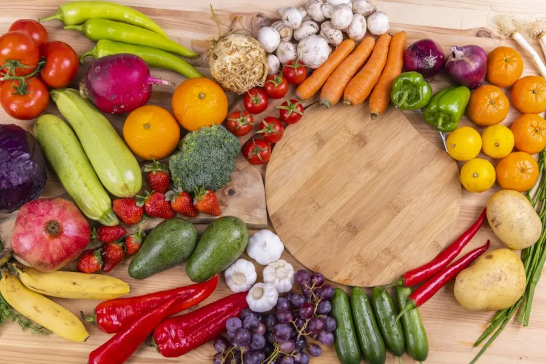
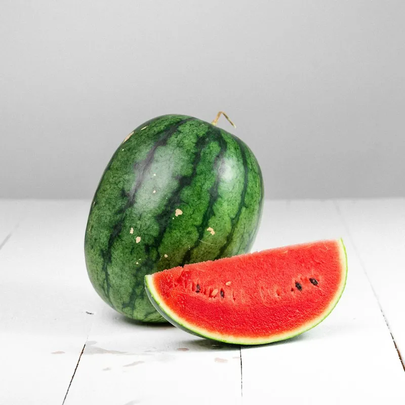
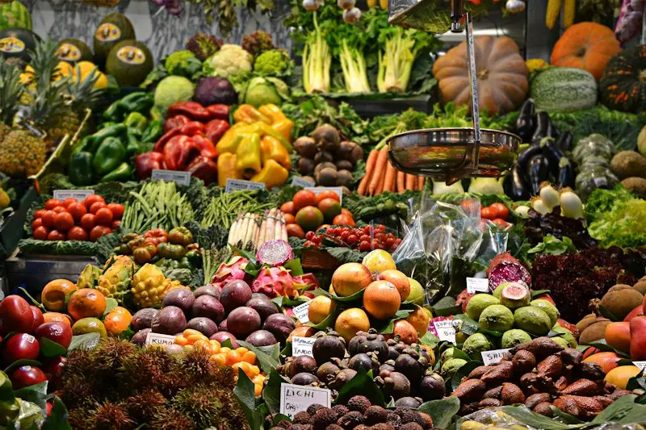
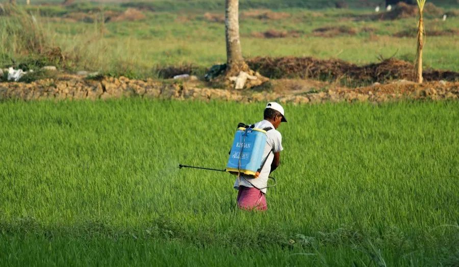

Direct From Soil: Certified Harvest Lots
Picked at optimum ripeness from our regenerative Salem acreage. Available for wholesale lot booking, institutional contracts, and cooperative distribution.
Current Harvest Batches Ready For Cold Dispatch
Every lot includes full laboratory pesticide residue test sheets and temperature tracking.

Organic Heritage Greens & Carrots
Hand-pulled baby spinach, rainbow carrots, and crisp broccoli grown in mineral vermicompost without synthetic sprays.
Order Wholesale LotCrisp Organic Mountain Apples
Sun-ripened orchard apples cultivated without wax coatings, fungicides, or synthetic ripening gas.
Order Wholesale LotHeirloom Khapli Emmer Wheat
Ancient grain rich in soluble fiber and resistant starch, stonemilled or supplied as whole raw berries.
Order Grain Silo Lot
Raw Wildflower Forest Honey
Unheated, unfiltered raw honey straight from our pollinator apiary with natural enzymes intact.
Order Honey Crate
Handcrafted Farmstead Cheeses
Aged 60 to 180 days in solar humidity cellars, prepared exclusively from raw pasture-fed A2 milk.
Order Cheese Batch
Wholesale Cooperative Mixed Crates
Custom tailored pallets of seasonal vegetables and herbs packed to supermarket specifications.
Request Pallet QuoteMulti-Residue Testing on Every Harvest Lot
Before any crate leaves our farm cold facility, sample batches are analyzed using Gas Chromatography-Mass Spectrometry (GC-MS). We test for 240+ synthetic insecticides, organophosphates, and heavy metals.
All test certificates are uploaded to the Produce Buyer portal and stamped with cryptographic batch IDs for complete consumer trust.

Eco-Conscious Packaging Designed For Zero Spoilage
We eliminate single-use plastics from farm gates to retail distribution.
Reusable Returnable Crates
Sanitized food-grade polypropylene returnable collapsible containers circulating in closed supply loops.
Biodegradable Cornstarch Liners
Breathable plant-based bio-films maintaining optimal humidity and slowing ethylene ripening gas buildup.
Phase-Change Ice Gel Packs
Non-toxic plant-gel chilling inserts keeping microgreens crisp without creating soggy melting water puddles.
What Leading Procurement Directors Say About Stackly Produce
"The shelf-life of Stackly organic greens is almost double that of conventional market produce because of their rapid solar pre-cooling. Our waste shrink dropped from 14% to under 2%."
"Their Khapli wheat flour makes sourdough bread with exceptional aroma and crust color. Our artisan bakery orders 4 tons every single month without fail."